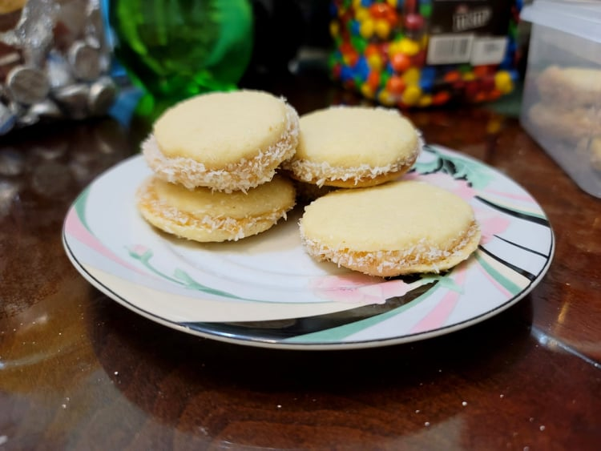

Alfajores

Ingredients:
- 1 1/4 cups Cornstarch, 180 g
- 1 cup Flour, 120 g
- 1 tsp Baking powder
- 1/4 tsp Salt
- 3/4 cup Unsalted butter
- 1 tsp Lemon zest
- 2/3 cup Sugar
- 3 Egg yolks
- 2 tsp Vanilla extract OR 1 tsp Vanilla extract + 1 tsp Rum
- 14 oz Dulce de leche
- 1/3 Shredded coconut
Instructions:
- Add the butter, lemon zest, and sugar to a bowl and cream with an electric hand mixer.
- Add the egg yolks and vanilla extract and mix with the electric hand mixer until combined.
- Add in the flour, cornstarch, salt, and baking powder. Mix until it becomes a cohesive dough. Cover with plastic wrap and refrigerate for about an hour.
- Preheat an oven to 350 degrees Fahrenheit.
- remove the dough from the fridge and flatten it to 1/4 - 1/8 inch. Cut out uniform circle shapes with a cookie cutter and place onto a parchment paper lined baking sheet. Repeat until all the dough is used up.
- Place into an oven and bake for 8 minutes, rotating the pans at 4 minutes. Remove from the oven and let cool completely.
- Place the dulce de leche into a piping bag. Place some dulce de leche onto the back of one cookie and then sandwhich onto another. Then roll the exposed dulce de leche of the cookie into the shredded coconut. Repeat for all cookies.
- Serve immediately or refrigerate to prevent the dulce de leche from melting.